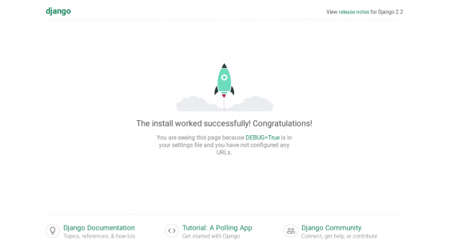

Objetivo: Instalsr Django con Python y Laravel y desarrollar una aplicación básica
Windows
Linux
Laravel es un Framework de PHP muy utilizado en la industria de las aplicaciones web.
Su uso permite facilitar al programador su tarea de desarrollo y facilita la modificación de código con una organización eficiente.
Para instalar en Windows lo que se necesita es tener Composer instalado.
Composer es un paquete de instalación de diferentes módulos de PHP
Para instalarlo entraremos a la siguiente liga. Descargamos y Ejecutamos el instalador.
Una vez instalado procederemos a ejecutar el siguiente comando desde la consola
Damos enter y comenzará la instalación de Laravel.
una vez instalado, nos aparecerá la siguiente pantalla
Ya que se haya instalado, para iniciar una aplicación en Laravel, escribiremos el siguiente comando en la consola.
Una vez terminado de crear la aplicación, podemos iniciar el servidor siguiendo las instrucciones de la documentación de Laravel que puedes ver en la siguiente liga.
Ya que hayamos hecho todo de manera correcta, procederemos a abrir el navegador y nos aparecerá la siguiente pantalla, la cual es nuestra aplicacíón de Laravel
Django es un framework parecido a Laravel pero de Python. Enfocado al desarrollo de aplicaciones web, Django permite explorar otro entorno de desarrollo.
Para instalar Django, tenemos que tener instalado Python 3 y un instalador de paquetes llamado 'pip'.
Una vez instalado, podemos correr los comandos de Django para crear un proyecto nuevo, corremos el siguiente comando
Ya que corrimos ese comando, nos creará nuestra aplicación en Django, simplemente creamos nuestro ambiente de trabajo y corremos el servidor con los respectivos comandos. Una vez creado el servidor procederemos a visualizarlo por medio del navegador
Laravel es un Framework de PHP muy utilizado en la industria de las aplicaciones web.
Su uso permite facilitar al programador su tarea de desarrollo y facilita la modificación de código con una organización eficiente.
Para instalar en Linux lo primero que tenemos que instalar es PHP 7.2 o superior y composer, como en Windows
Una vez corrido ese comando, el sistema contará con los paquetes de composer necesario para instalar Laravel.
Escribimos el siguiente comando
Ejecutamos el comando y esperamos a que se Instale Laravel
Una vez ejecutado el comando, tenemos que editar las variables de entorno para crear nuestro proyecto en Laravel, primero corremos el siguiente comando
Y una vez dentro del archivo, entramos